Validarea problemei identificate
Identificarea problemei
Problema este uşor de identificat. Astăzi, majoritatea elevilor / studenţilor fac, pe lângă activitatea şcolară obligatorie, şi pregătiri suplimentare particulare. Acest lucru necesită un proces ceva mai complex în care sunt implicaţi atât părinţii cât şi elevii şi care poate crea anumite probleme: căutarea unui meditator care să fie relativ aproape (în acelaşi oraş), care să fie disponibil în intervalul de timp stabilit şi care să se încadreze în bugetul alocat.
Soluţia propusă
Soluţia noastră implică mutarea ajutorului educaţional în spaţiul online. Acest lucru se realizează printr-o platformă care aduce meditatorii şi elevii/studenţii mai aproape. Astfel soluţiile de meditare cresc (e.g. poţi face meditaţie cu cineva din alt oraş), flexibilitatea este sporită (fără deplasare), iar plăţile sunt efectuate în siguranţă, transparent.
Plan de Customer Discovery
Ne dorim să explorăm cât mai mult segmentul de clienţi (elevii şi meditatorii). Ne vom axa în principal pe elevi/studenţi ce au nevoie de ajutor educaţional, deoarece ei vor fi cei care vor plăti serviciul. Propunem un formular prin care să înţelegem nevoile acestora, mai exact: dacă nevoia de meditaţie există, dacă este accesibilă meditaţia "fizică/în persoană", dacă ar prefera să se mute în online şi de ce.
Descrierea procesului
Pentru a valida acest proiect am recurs la o variantă simplă şi la îndemână: chestionare online. Următorul pas ar fi monitorizarea şi colectarea datelor de pe landing page (timp petrecut pe pagină, adrese de email, IP-uri etc) folosind google analytics.
Setul de întrebări este disponibil aici [https://goo.gl/forms/QiGsEpivLn99nDT72], iar răspunsurile (view only) aici [https://docs.google.com/spreadsheets/d/1TkRVGM-fkZLRMMVhEdKFItw1FkVPrrIDtOwqc66bCUA/edit#gid=123763924].
Am distribuit acest formular pe un grup pe facebook al unui liceu din Piteşti, cât şi în cadrul unor grupuri de studenţi, în principal în Bucureşti. Distribuţia poate fi văzută mai jos în două grafice care arată particularităţile persoanelor ce au completat formularul: în principal studenţi şi elevi de liceu, o majoritate covârşitoare dintre aceştia recunoscând că au făcut sau fac meditaţii.
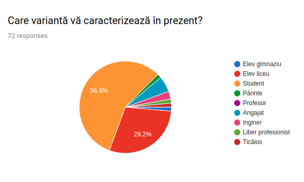
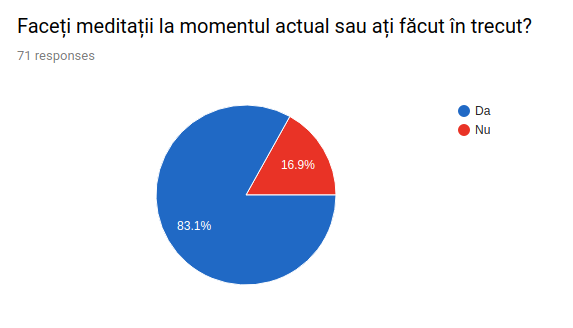
Acest lucru ne confirmă faptul că meditaţiile sunt de interes şi ne putem concentra în această direcţie. Observăm că meditaţiile sunt făcute în principal cu scopul pregătirii pentru (în ordine): examenul de bacalaureat, admitere facultate, olimpiade, evaluarea naţională. Graficul este următorul cu precizarea că procentele nu însumează 100% pentru că a fost o întrebare cu răspunsuri multiple.
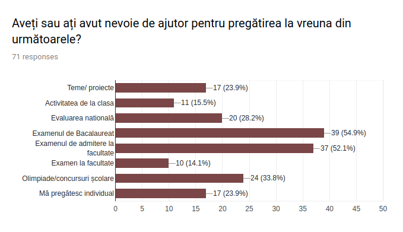
Am încercat să înţelegem piaţa şi să găsim problemele ce apar frecvent la meditaţiile "clasice". Astfel răspunsurile arată ca principala problemă este dată de calitatea scăzută a predării, exprimată prin:
- superficialitate şi lipsă de profesionalism
- dezinteres
- dificultăţi în înţelegere din cauza modului de predare
- explicaţii insuficiente
Următoarele probleme observate sunt date de motive logistice: grupuri prea mari de elevi, preţ ridicat, programul inflexibil al meditatorului - în neconcordanţă cu al elevului.
Am investigat problema distanţei prin întrebarea "Considerați că aveți acces ușor la meditatori competenți în apropierea dumneavoastră atunci când aveți nevoie de ajutor?". Răspunsurile sunt împărţite aproximativ 60% Da, 40% Nu. Cu toate acestea, presupunem ca procentajul ridicat al răspunsului pozitiv se datorează în mare parte faptului că sondajul a fost efectuat în special în Piteşti şi Bucuresti, oraşe destul de mari, unde nu este lipsă de profesori competenţi. Ar trebui efectuat studiu similar în oraşe mici (sau chiar mediu rural).
Eşantionul nostru mai arată câteva detalii utile: gradul de satisfacţie marcat prin note de la 1 la 10 pentru meditaţiile date are o valoare medie de 7.4, iar preţul "cinstit" pentru o şedinţă este in jurul a 50-60 lei.
Cum era de aşteptat pentru noi, profesorul meditator este găsit în majoritatea cazurilor prin recomandări ale cunoscuţilor. Acest lucru ne face să fim încrezători că platforma online "Învaţă altfel" poate uşura procesul de căutare, de exemplu prin facilitatea de rating şi review a meditatorilor. Dificultatea de căutare în procesul clasic este de asemenea o problema semnalată şi în ultima întrebare a formularului.
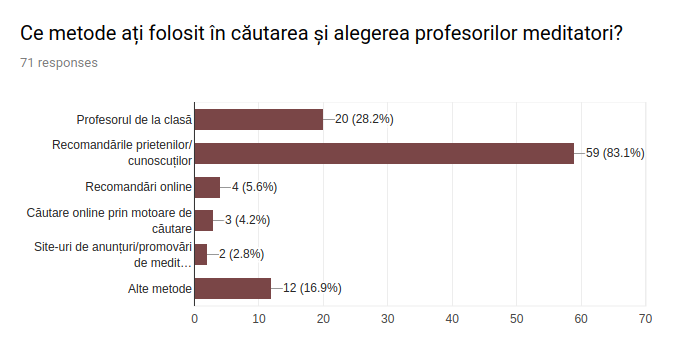
Ultimele întrebări fac referire la platforma noastră. Un lucru interesant este faptul ca un procent mare dintre cei intervievaţi ar dori să folosească platforma pentru meditaţii de scurtă durată (rezultatul scontat fiind cel opus).
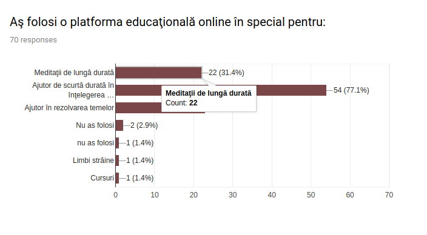
Datele arată că respondenţii sunt deschişi faţă de ideea de a utiliza o astfel de platforma şi în general de a muta meditaţiile în spaţiul online: (Pozitiv: 68%, Negativ: 25%, Neutru: 7%). Problema mai mare pentru noi ar fi aici că majoritatea din cei cu răspuns negativ consideră că este mai uşor de înţeles când le este explicată o lecţie sau un concept "face to face".
În final, prin ultima întrebare (numărul 11) am încercat să aflăm care sunt considerate de către respondenţi a fi cele mai importante caracteristici ale unei platforme educaţionale online.
Astfel, investigaţia dovedeşte ca prima mare categorie pe care trebuie să ne concentram este asigurarea calităţii ridicate a serviciului prestat de meditatori. Această categorie include:
- materiale educaţionale bune, de calitate, sugestive
- explicaţii amănunţite, asigurarea că acestea au fost bine înţelese
- comunicare eficientă
- seriozitate, profesionalism
- captarea atenţiei
- responsivitate (răspuns rapid din partea meditatorilor)
- interactivitate, folosirea materialelor ajutătoare: imagini, videouri, jocuri
O a doua categorie ce nu poate fi ignorată este data de calitatea interfeţei platformei. Aceasta trebuie sa asigure:
- simplitate în utilizare
- design/UX atractiv
- accesibilitate (multi-platform)
- uşurinţă în căutarea şi filtrarea meditatorilor
- varietate mare a ofertei - atât domenii cât şi meditatori
Alte caracteristici importante de avut în vedere sunt legate de flexibilitatea programului: posibilitatea de a schimba ora meditaţiei în funcţie de programul elevului şi posibilitatea de folosire a platformei "la nevoie", nu în mod regulat.
Răspunsurile formularului mai menţionează şi aspecte precum raportul calitate/preţ favorabil, acces la reviewuri şi informaţii despre meditator şi posibilitatea de a înregistra şedinţa.
Schimbări în urma datelor
Conform întrebărilor 4 şi 11 ne-am dat seama ca este foarte important să avem pe platformă meditatori cât mai compentenţi, atât din punct de vedere al cunoştinţelor cât şi a stilului pedagogic. În acest scop am hotărât că la înscrierea acestora este necesară o formă eficientă de verificare. De exemplu printr-un test iniţial de evaluare a competenţelor declarate. De asemenea, vom introduce facilităţi de evaluare prin rating şi review a meditatorului de către elev. Acestea vor ajuta la filtrarea mai uşoară a meditatorilor şi la păstrarea calităţii ridicate a serviciului. Totodată, faptul că relaţia dintre useri este online, oferă mai multă flexibilitate, se poate alege oricând alt meditator.
Vom lua în considerare şi opţiunea principală furnizată în întrebarea 9: "folosirea platformei pentru meditaţii de scurtă durată, explicării unui conceăt sau ajutorului în efectuarea unei teme". Acesta este un tip de utilizare a platformei pe care nu îl luasem în considerare înaintea acestei analize.
Suntem gata pentru pasul următor - Customer Validation?
Aproape că da. Ar mai trebui făcute chestionare cu elevi/studenţi din zone mai diverse (oraşe mici, medii, mari, mediul rural). Iar în cazul elevilor, ar trebui să ne concentrăm şi pe contactarea părinţilor acestora, în general ei fiind cei care iau deciziile în privinţa meditaţiilor. Într-o altă sub-etapa, ar trebui făcut un chestionar separat şi contactaţi şi potenţiali meditatori pentru a descoperi nevoile acestora.
Cu toate acestea, suntem încrezători că suntem pregătiţi pentru a trece la următoarea etapă de validare. În urma analizei iniţiale reiese că există cerere pentru o astfel de platformă online, iar o parte semnificativă a respondenţilor ar încerca acest serviciu.
De asemenea, am descoperit câteva atribute pe care platforma ar trebui să le aibă pentru a corespunde nevoilor şi dorinţelor elevilor. Şi mai important, am identificat probleme şi nemulţumiri uzuale ale procesului "clasic" de meditaţii ce pot fi rezolvate prin folosirea platformei online. Implementarea propunerilor relevante obţinute în urma investigaţiei este esenţială pentru continuarea acestui proiect.
Wireframes
Landing page: http://invata-altfel.com
Wireframes:
- Home page
- Payment page
- Start meditation page
- Meditation session page

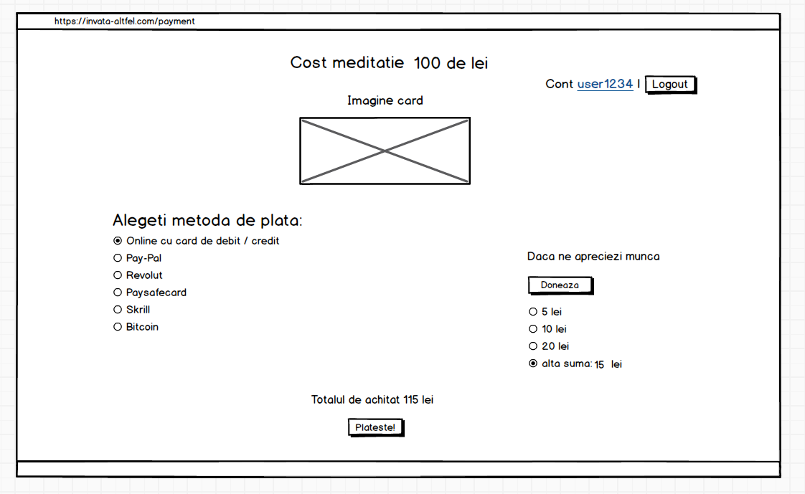

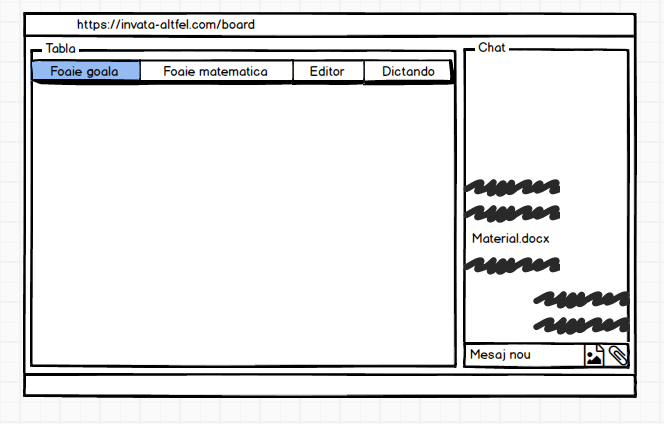
UX
User persona
Am creat un user persona generic al platformei educaţionale, în concordanţă cu informaţiile obţinute în sesiunea iniţială de validare. Astfel, Alexandra Popescu face parte din categoria principală de useri: elevi ce recurg la ajutor educaţional cu scopul de a se pregăti pentru examenul de Bacalaureat şi/sau pentru examenul de admitere la facultate.
De asemenea, am ales pentru acest user persona caracteristicile principale regăsite în urma chestionarului de validare: nemulţumiri întâlnite frecvent faţă de profesorul sau serviciul de meditaţie şi sursele de motivaţie principale pentru a folosi o platforma educaţională online.
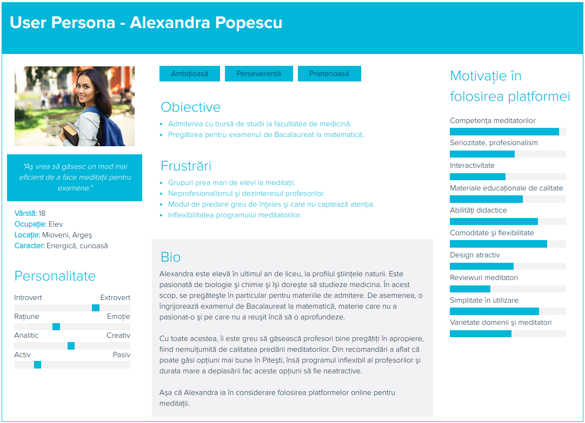
User Stories
Use Cases

User Flows
- Authentication
- Start Session
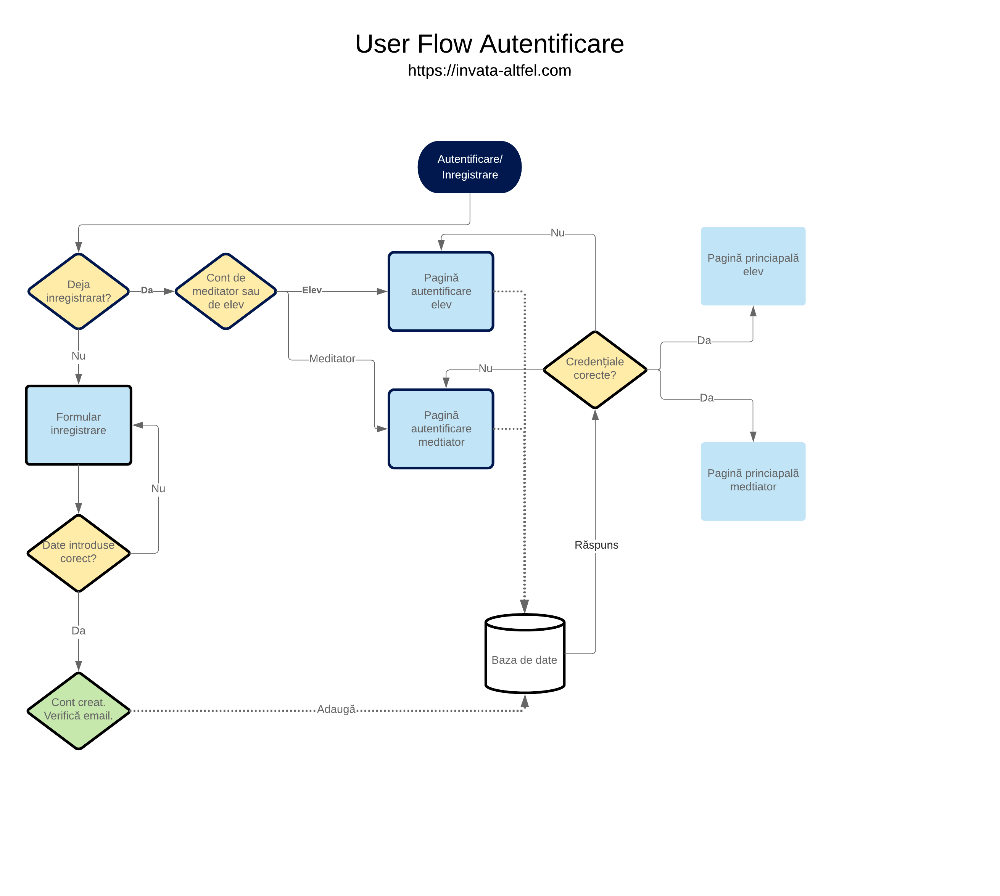
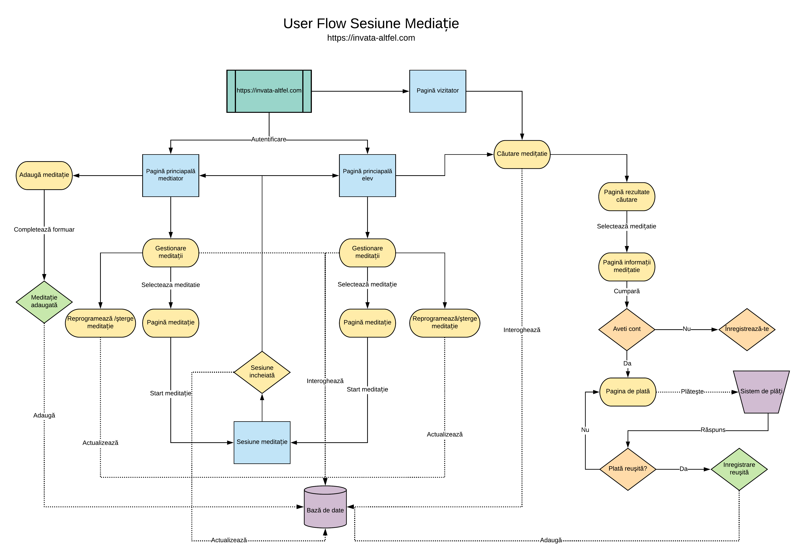
M5
Aducerea de oameni pe site
Oamenii au fost adusi pana acum pe site folosind mesaje directe si postari pe grupuri de facebook. Din pacate, facebook a considerat ca facem spam si am fost blocati o perioada de timp. In principal, am folosit poza de mai jos pentru a atrage vizitatori
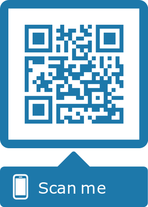
De asemenea, mai jos se regaseste un grafic cu evolutia numarului de useri.
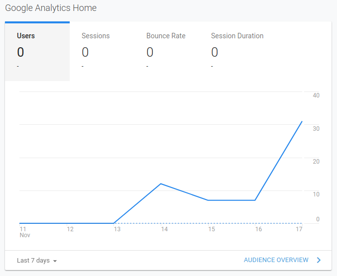
Dupa cum se poate vedea numarul userilor este in crestere. Din pacate google analyctics nu da raportul si pe ziua curenta (ziua in care s-a facut mai mult trafic). Pentru evaluare, putem sa dam access cuiva din echipa de SE pentru a vedea mai multe detalii precum si datele colectate in formular. (nu dorim sa facem chiar totul public - sau cel putin nu asa usor de accesat)
Am intervievat 3 persoane pentru a afla ce parere au despre platforma noastra.Acestea au fost intrebarile:
1. Ce parere aveti despre navigare, demo-uri si ce vi se pare ca lipseste? 2. Intrebare de interes: Cat de importanta vi se pare functionalitatea video? Dar cea audio? 3. Ce asteptari aveti de la meditator atunci cand faceti meditatii? 4. Cum vi se pare ca se transpun aceste asteptari pentru mediul online? 5. Ati facut meditatii in trecut si daca da cu ce scop (bacalaureat, admitere, performanta, etc.)? 6. Descrieti cea mai placuta si cea mai neplacuta situatie in care ati fost pus in timpul unei meditatii. 7. Care sunt cele mai importante caracteristici ale unei platforme de meditatii online care v-ar determina sa recurgeti la folosirea acesteia in locul meditatiilor fata in fata? 8. Ce parere aveti despre langind page? Ce ati adauga, sterge, modifica la el?
Raspunsurile lor au fost urmatoarele:
Persoana numarul 1
1. In opinia mea lipsesc cautarea meditatorului in functie de preferinte de pe prima pagina si rama tablei pentru a o delimita in pagina. 2. Consider ca ambele sunt la fel de importante deoarece inlocuiesc comunicarea care s-ar face daca as fi fizic langa meditator. 3. Cea mai mare asteptare pe care o am de la un meditator este ca acesta sa fie rabdator. As prefera de asemenea sa primesc feedback pozitiv atunci cand inteleg repede, sa ma felicite. Tot legat de inteles, as vrea sa foloseasca metode alternative pentru a explica daca nu am inteles din prima. As dori sa primesc teme care sa aiba legatura directa cu ce s-a predat la ultima sedinta pentru a vedea atat eu cat si el daca am inteles. 4. Se pot trasnpune destul de usor in mediul online deoarece exista contact vizual constant si exista facilitati suplimentare de exprimare prin tabla virtuala si chatul in care se pot trimite fisiere. Consider asta si deoarece niciuna dintre asteptarile mele nu are legatura directa cu situatia de a fi fata in fata. 5. Da, am facut meditatii intrecut pentru teze, exameul de bacalaureat si performanta (concursuri si olimpiade scolare). 6. Cea mai placuta situatie a fost la o sedinta de meditatii la care meditatorul m-a apreciat si incurajat, iar asta mi-a oferit un boos de performanta si incredere de sine. Cea mai neplacuta situatie mi se pare ca e atunci cand meditatorul nu are suficienta rabdare sa imi explice. 7. Printre caracteristici cele mai importante mi se par utilizarea formulelor matematice (ridicare la putere, radicat, etc.), foile cu patratele pe tabla virtuala, instrumente pentru trasat linii, unghiuri si pentru desenat figuri geometrice. As folosi platforma deoarece as evita deplasarea la domiciliul meditatorului salvand timp pretios si fiecare se va simti confortabil in mediul cu care e obisnuit. 8. Landing page-ul arata bine cu esceptia faptului ca as vrea sa vad 3 demo-uri in loc de unul pentru cele mai importante subiecte pe care le oferiti (materii stiintifice, lingvistice, etc.). De asemenea as vrea sa vad cartile de pe fundal mai evidential, eventual mai putine, dar cu copertile mai detaliate (eventual ca la demo-uri, 3 carti pentru cele mai importante 3 materii).
Persoana numarul 2
1. Navigarea este minimala, dar la obiect, va dau un plus pentru demo si v-as sufera ca la tabla virtuala sa adaugati foi cu patratele (pentru grafice) si un tool de desenare grafice functie de niste valori date, ca in Matlab. 2. E importanta interactiunea video deoarece meditatorul iti poate arata ceva ce nu poate fi desenat pe tabla virtuala si de asemenea ii poti vedea reactiile (de exemplu multumirea sau nemultumirea fata de nivelul tau). E importanta si functionalitatea voce deoarece fara interactiune ar parea ca dai un test, nu ca cineva iti explica vocal ce nu ai inteles. 3. Cele mai mari asteptari pe care le am de la un meditator e ca acesta sa aiba un interes afisat, sa arate lucruri noi, mai multe metode de a rezolva o problema daca se poate ca sa imi aleg eu apoi metoda pe care o consider mai potrivita si sa o utilizez pe viitor. Dar cel mai important este sa aiba rabadare cu mine, este calitatea care le lipseste multor meditatori. 4. Dupa parerea mea asteptarile (mele) se pot transpune in mediul online, iar platforma pare ca se apropie foarte mult de meditatiile traditionale datorita featerurilor audio, video si tablei virtuale. 5. Am facut meditatii in liceu pe clasa a 12-a pentru examenul de bacalaureat si admiterea la facultate. 6. Cea mai placuta situatie este atunci cand inteleg tot pe parcursul meditatiei, iar cea mai neplacuta a fost cand meditatorul imi pierdea timpul pentru care plateam facand altceva in loc sa ma mediteze. 7. Cele mai importante caracteristici si beneficii pe care eu le vad la o astfel de platforma sunt comoditatea cu care se face meditatia datorata conectarii rapide intre cele doua parti, meditatorul si cel meditat si faptului ca niciunul dintre noi nu trebuie sa se mai deplaseze, amandoi castigand astfel timp, iar eu economisind o suma ce-i drept mica, pentru banii cheltuiti pe transport. 8. Consider ca landing page-ul arata bine, mai ales datorita fundalului care inspira si indeamna la invatat, la care cred ca s-ar potrivi o optiune de contact si una de afisare preturi undeva in partea dreapta sus sau jos.
Persoana numarul 3
1. Ce lipseste si as vrea sa vad este sa afisati utilizatorii in functie de media notelor si a feedback-ului date de alti elevi atunci cand cauti meditatorul. As mai vrea sa vad detalii despre meditator cu orele in care e disponibil. 2. Partea de video nu mi se pare foarte importanta deoarece oricum explica prin desene si notite pe tabla virtuala. In schimb functionalitatea audio mi se pare cea mai importanta deoarece salveaza timp pe care l-ai irosi scriind folosind tastatura pentru a comunica in chat. 3. Printre asteptarile mele pe care le consider foarte importante ar fi ca meditatorul sa explicele pe intelesul meu, sa se adapteze la nivelul meu de intelegere si sa inteleaga ca este diferit fata de al lui. Ma astept ca el sa imi descopere punctele slabe astfel incat sa lucreze mai mult in diferite zone ale materiei si sa ofere un raport calitate / pret bun. 4. Mi se pare ca toate asteptarile mele se pot transpune cu succes in mediul online deoarece nu sunt influentate de prezenta meditatorului langa mine. De asemenea mi se pare ca iti oferta o siguranta mai mare in privinta cunostintelor meditatorului, dar si a personalitatii / caracterului lui. 5. Da, am facut pentru bacalaureat si admitere. 6. Situatia cea mai placuta a fost cand am inteles tot ce mi s-a explicat pe parcursul sedintei de meditatie, iar cea mai neplacuta a fost cand am fost invatata ceva gresit. 7. Cele mai importante caracteristici ale unei platforme de meditatii online ar fi conexiunea rapida la aceasta, calitatea video mai putin, mai mult calitatea audio. M-ar multumi daca ar exista o metoda prin care meditatorul sa fie testat si evaluat obiectiv astfel incat sa nu mai am de a face cu oameni nepregatiti profesional. Stiu ca nu se poate intampla asta, dar nu vreau reclame pe platforma. 8. Landing page-ul arata ok, dar nu e optimizat pentru toate rezolutiile, poate mai lucrati un pic la asta. De exemplu mie imi apare jumatatea superioara din textul “Ai nevoie de ajutor?”.
Contact
- Email invataaltfel@mail.com
-
Adresă
București, România